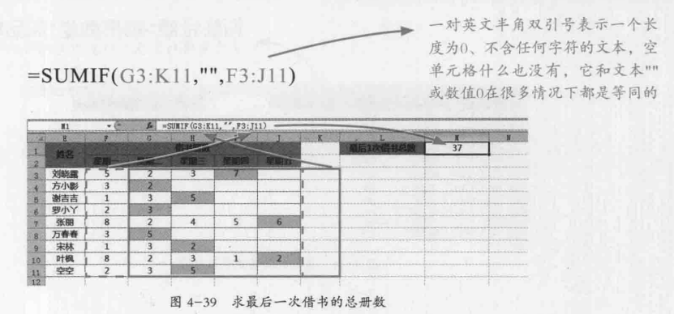
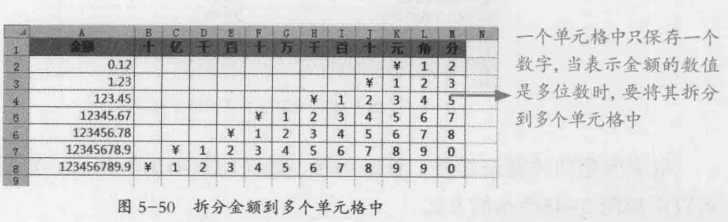
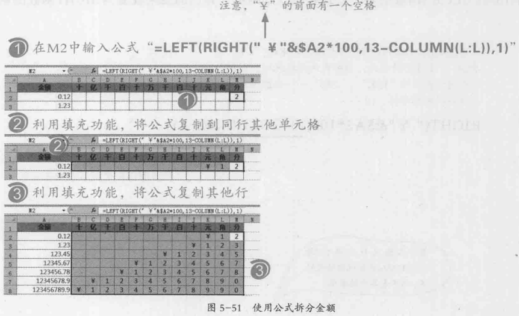
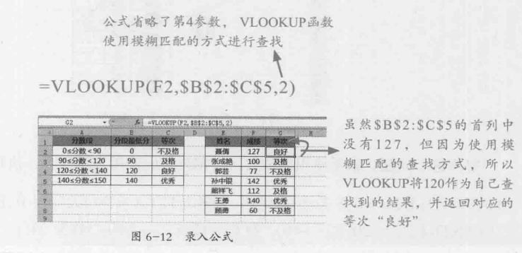
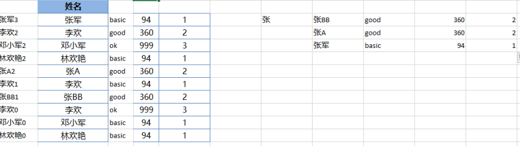
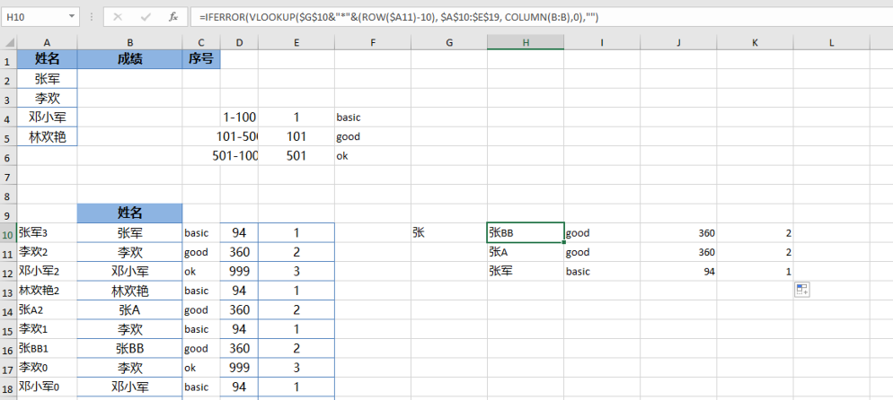

(In Process)Reading Notes for "别怕, Excel函数其实很简单I" Written by Excel Home
A review of Excel Functions before new school year: The study notes for the Chinese book "别怕, Excel函数其实很简单I", produced by Excel Home.
- I-2: Formulas
- I-3: Calculations
- I-5: Texts
- I-6: Search by Using Formulas
I-2: Formulas
Use Formulas tab to find formula if we need
Auto Fill Formula
- Use
tabto auto-fill formula name when typing - Use
Ctrl + Shift + Ato pre-fill all parts of formula
Format Cell for Formula
- Make sure cell has general format：right cell then
Format Cells - Many such text cells: Data -> Text to Columns -> Delimited -> Uncheck Delimited Character -> Set Regular Column Format
For non-calculating numbers (such as IDs), it is proper to convert cells to text format. Otherwise ending 0s will be eliminated and there is no way to restore it
Copy Formulas to Other Cells
-
Ctrl + Alt + V: paste with selection - Curse to extend current cell
Variables and Values
Compare Values in Excel
- smallest: number
- largest: boolean
- Date: transfer to number then compare
Special Characters
-
&: combine two data to a next text - A range
single spaceB range: common cells of A and B - A range
,B range: all cells of A and B
Reference
F4 (Fn + F4) is used to switch reference style
-
A1format：relative reference -
$A$1format: absolute reference. Used for any fixed value cell -
$A1orA$1format： absolute in row or column only -
Worksheet!A1format：define name of worksheet to cell -
' &a'format:''is used to quote special characters in formula
Basic Formulas
Use "" to wrap criteria
IS
ISTEXT, ISERR... format: check format of cell
Nested Or Simple IF
-
=IF(compare2, true_result, IF(compare1_formula, true_result, false_result))- A tree map will help nested IF formula -
IF+SUBSTITUTE: transfer cell format:=IF(ISNUMBER(B2),B2, SUBSTITUTE(B2, "'$'", "")) -
IFERROR: Eliminate error values, such as divide by 0.=IFERROR(A1/B1,0)
AND,OR,NOT
Can be combined with IF to avoid too nested IF functions
wildcard
-
?: one random character -
*: any random characters (0 - many) -
~: escape?and*
I-3: Calculations
SUM
SUMIF(filter_range, criteria, sum_range)
Excel will search position in filter_range, then sum the same portion in sum_range
-
sum_rangecan be eliminated if it is the same asfilter_range -
sum_rangecan cover columns with different type of cells. Excel will automatically filter the cell - Sum without any error cells:
SUMIF(range1, "<=9E+307", range2) - Filtering based on cell:
SUMIF(range1, ">="&A1, range2)
Practice Question: find sum of last borrowed books

SUMIFS(sum_range, criteria_range1, criteria1, criteria_range2, criteria2, ...) - multiple filter criteria
Total of sum_range should equal to total of each criteria_range
AVERAGE
AVERAGEIF(range, criteria, [average_range]) and AVERAGEIFS(average_range, criteria_range1, criteria1, [criteria_range2, criteria2], ...)
Might need to use absolute in criteria
COUNT
=COUNTIF(Where do you want to look?, What do you want to look for?)
Count Number of Cells based on criteria
- Count number of cells in range:
=COUNT(range, criteria)or=COUNTIF(range, "<>"") - Count empty cells (
nullas content):=COUNTIF(range,"=") - Count non-empty cells(including
""as content):=COUNTA(range, [criteria])or=COUNTIF(range,"<>") - Count non-empty cells(excluding
""as content):=COUNTIF(range,"*") - Count all empty cells(including
""as content):=COUNTBLANK(range)or=COUNTIF(range,"")
COUNTIFS(criteria_range1, criteria1, [criteria_range2, criteria2]…)
Similar rule as above
Delete Extra Digits
ROUND
ROUND(number, keep_digits) for Number Cell and FIXED(number, [decimals], [no_commas]) for Text Cell
keep_digits can be positive, 0 (integer) or negative (0s in integer)
ROUNDUP(number, num_digits) and ROUNDDOWN(number, num_digits)
Delete parts after decimal point
-
TRUNC(range, [digits_after_decimal_point]): no round, just delete -
INT(number): always round down to an integer
I-5: Texts
Strings
Combine String
-
CONCATENATE(text1, [text2], ...): no range, just cells -
&: no range, just cells
String Length
DBCS include Japanese, Chinese (Simplified), Chinese (Traditional), and Korean.
-
LEN(cell): count character length -
LENB(cell): count bytes. Only when a DBCS language is set as the default language->2 for Asian Characters
Compare String
-
=: not case sensitive. Compare text type ("25" != 25) -
EXACT(text1, text2): no compare text type ("25"=25), case sensitive
Find Location
-
FIND(find_text, within_text, [start_num]): case sensitive. don't allow wildcard characters. -
SEARCH(find_text,within_text,start_num): not case sensitive. Allow wild card -
FINDB(same)andSEARCHB(same): return bytes
SEARCHB("?",cell): find first singe-byte character in cell
Practice Question
subtract Chinese characters from ChineseEnglish formatted string: =LEFTB(cell, SEARCHB("?",cell)-1))
Substring
-
LEFT(text, [length_of_chars_to_substract]): first length of characters. from most left -
RIGHT(text, [length_of_chars_to_substract]): last length of characters. from most right -
MID(text, start_num, length_of_chars_to_substract): start from left
Practice Question
Split money amount to difference cells


Find and Substract Characters Before
LEFT(cell, FIND(find_text, within_text, [start_num])-1)RIGHT(cell, LEN(cell)-FIND(find_text, within_text, [start_num]))
Substitute in String
-SUBSTITUTE(cell, old_text, new_text, [the index of occurrence]): by text: one-to-one
-SUBSTITUTE(SUBSTITUTE(text, old_text, new_text, index1), old_text, new_text, index2): by text: one-to-many
- REPLACE(cell, start_num, num_chars, new_text): by position: find position/length of characters and replace it
Text Function
Shortcut: Ctrl+1 ( Command+1 on the Mac) -> Not change data itself
=TEXT(Value you want to format, "Format code you want to apply"): change the data in cell. Always return text format. Always start from right.
Second Parameter - Normal Format
Example: =TEXT(C4, "z;$;128;t")
-
format_for_positive_number; format_for_negative_number; format_for_0; format_for_text: cell will be modified based on its correspondence. - Skip the last few criteria will make format only apply to criteria appearing. For example
=TEXT(C4, "z;$")will only apply to non-negative and negative number
Value! Error
Use
!or\to escape special characters!
- when special characters are used to format a string, such as a,m,y, etc.
- if special format like
yyyyis used to too large/small number, Value! error will appear
Second Parameter - Self-Defined Format
- Still no more than four criteria
-
[judge1]format1;[judge2]format2;format_for_not_satisfy_judge1_and_judge2 ;format_for_text:=TEXT(B2, "[>1000]z;[<-9000]$&TT;128;t") [judge1]format1; format_for_not_satisfy_judge1[judge1]format1; [judge2]format2;format_for_not_satisfy_judge1_and_judge2
Second Parameter - Pre-Defined Format
-
0: 1 digit. If number has less length than 0s, number will be automatically add 0s from most left digit -
0.000: define how many digits after decimal point -
?: 1 digit, but no 0s showing on most left digits and non-used 0s after decimal point.Spacewill be used to make up empty slots after decimal point. -
#: 1 digit. No make up empty slots -
,: automatically add,for thousands. To make numbers larger than 1000 only show before 1000 part:=TEXT(A1,"0,") - dates:
yyyy,mm... - texts: string from right. if a cell is
11507,=TEXT(C3,"0\y\e\a\r0\m\o\n\t\h0\d\a\y")will output115year0month7day
Common Cases
- decimal to fraction:
= TEXT(B3, "# #/#") - show number in million:
=TEXT(B3, "0.0#,,")
Transfer between Numbers and Text
- Number cell: left assign
- Text cell: right assign
Number to Text
following functions in Excel 2016 (Windows/Mac) seems not change format showing in tool bar anymore. I need more investigation
= TEXT(D3, "@")=D3&""-
'ddddd: add'before number will transfer cell to text without showing'
SUM Problem
To make SUM function work:
1. cell is in number format
2. content in cell are pure numerical
Text to Number
-
VALUE(cell): transfer cell directly -
cell+0or--cell
I-6: Search by Using Formulas
VLOOKUP - Vertical Search
=VLOOKUP(Value_to_look up, range_to_lookup, column_number_in_range_containing_return_value, Approximate Match – 0/FALSE or 1/TRUE)
Rule1: Matching data in column has to be unique! Rule2: VLOOKUP will automatically search from left to right => The helper column should be on the most left if no more adjustment.
- If no result found, return
#N/A - If eliminate last criteria, make sure to add last
,for exact match. Otherwise Excel will do approximate match - Approximate search using number smaller or equal to search value
- Can use wildcard
Common Usage
Replace IF to find value providing range
- enter the lowest value in new column
- using approximate VLOOKUP:
=VLOOKUP(cell_to_look_up, absolute_range_of_lowest_and_matching_value, 2, 1)

Return Multiple Columns in One Row
= VLOOKUP($E$10, $A$2:$C$5, COLUMN(B:B), 0): use absolute value to look up and use COLUMN() to automatically update column number
Return Multiple Record
Be creative and flexible about COLUMN and ROW function!
- Add a new column, then count occurrence of each record matching the lookup value using
$look_up_cell&COUNTIF(range_of_names, $_look_up_cell&"*").A1is the start of name

- Using
IFERROR(VLOOKUP($absolute_look_up_cell&(ROW(A1)-row_number),range_of_all,COLUMN(M:M),0),"")to find match with new column

Lookup by Multiple Criteria
IDEA: combine multiple search to one helper column. To avoid combination mistake, add special character "@" in the middle
- Adding helper column on most left:
=$D10&"@"&$E10&ROW(10:10) - VLOOKUP Function with error prevention:
=IFERROR(VLOOKUP($H$14&"@"&$I$14&(ROW(14:14)-4), $B:$F, 2,0),"")
Possible Errors
- Cell may include hidden space or invisible character at the end of string: use
LEN()to judge - Target cell has different format from target range
HLOOKUP - Horizontal Search
HLOOKUP(lookup_value, table_array, row_index_num, [range_lookup])
Same as VLOOKUP, the helper row should be the first row
MATCH
MATCH(lookup_value, lookup_array, [match_type]): return relative position of look_up_value in lookup_array. If the cell is repeated in column/row, MATCH function will only return the position of its first appearance.
lookup_array
Has to be one row or one column
match_type
-
1: default. Find smaller or equal to look_up_value. The look_up_array has to be ascended sorted. -
0: the first value equal to look_up_value -
-1: Find larger than or equal to look_up_value. The look_up_array has to be descended sorted.
Common Usage
Find Repeated Cell in Two Rows/Columns
Use ISNA to judge N/Avalue: =IF(ISNA(MATCH(I10,$C$10:$C$19,0)),"FALSE","TRUE")
Retrieve the First Record of All
The result of match is equal to the row number if the cell is the first appearance
- Helper Column/Row to show the first appearance of all cells:
=MATCH(C10,$C$10:$C$19,1)=(ROW(C10)-9). The row number might need adjustment! - Output cells with
TRUEin helper column/row:= IF(G11 = TRUE, C11) - Filter all non-FALSE value
Get the Record that Only Showing Once
=IF((MATCH(I10,$C$10:$C19,0)=MATCH(I10,$C$10:$C19,1)), "UNIQUE", "NOT UNIQUE")
INDEX - Find Cell by Relative Position
-
AREAS(cell): return how many cell is referenced
Return a reference to the cell
-
INDEX(array, row_num, [column_num])： with row number and/or column number -
INDEX(row_array or column_array, number): the nth cell in a row or a column
Return Real Data
-
INDEX({"array","in","text"}, number): return real data in array
Comments
Comments powered by Disqus